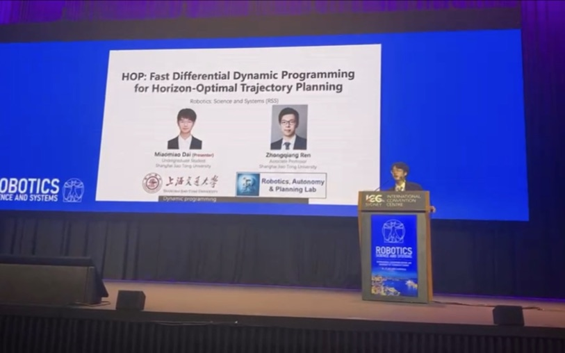
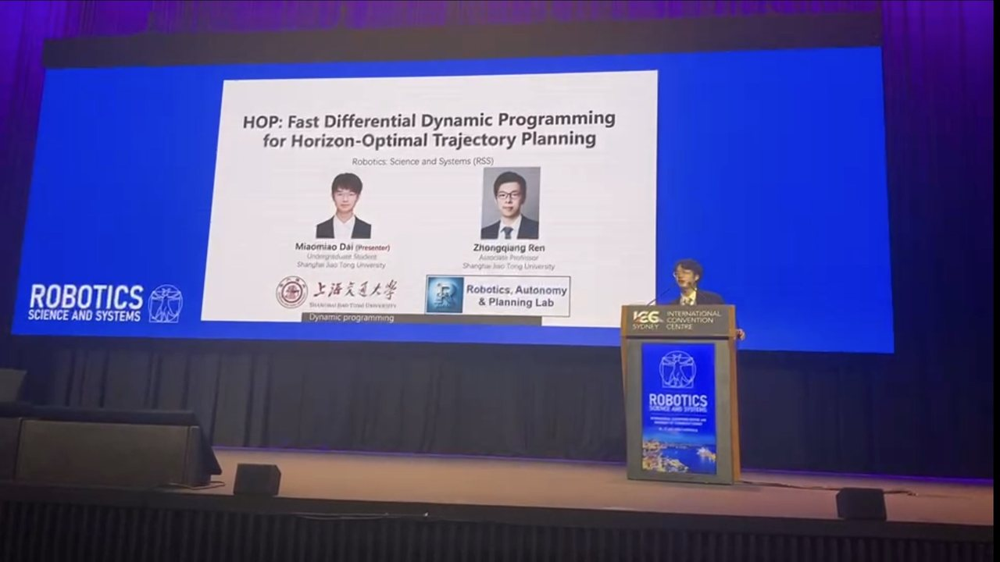

Accepted · RSS 2026 · First author as an undergraduate已录用 · RSS 2026 · 本科期间第一作者
HOP: Fast Differential Dynamic Programming for Horizon-Optimal Trajectory Planning
Miaomiao Dai, Zhongqiang Ren · Shanghai Jiao Tong University代淼淼，Zhongqiang Ren · 上海交通大学
The horizon is a decision把视界作为决策变量
How long should a motion take? A fixed horizon answers that question before optimization even begins. HOP instead chooses an integer terminal index together with the control sequence, balancing the motion cost against a duration penalty.
一段运动应该持续多久？固定视界的规划器在开始优化前就给出了答案。HOP 则把整数终止时刻与控制序列一起选择，在运动代价与时长惩罚之间权衡。
Trying every candidate separately repeats much of the same computation. The key is to share that work across horizons while still accounting for the terminal cost at each possible endpoint.
逐个尝试候选视界会重复大量计算。关键是跨视界复用这些计算，同时正确处理每个候选终点对应的终端代价。
Compose once, query every horizon一次组合，查询全部视界
HOP rewrites the Riccati recursion as a composition of linear fractional maps. A forward sweep builds the compositions; inexpensive queries then evaluate all candidate horizons. For a fixed state dimension, this reduces the horizon-evaluation cost from O(N²) to O(N).
HOP 将 Riccati 递推改写为线性分式映射的组合。前向扫描构建这些组合，再以低开销查询评估所有候选视界。对固定状态维度，视界评估的复杂度由 O(N²) 降为 O(N)。
For nonlinear systems, HOP-DDP forms a local linear-quadratic model, predicts a horizon, and performs the DDP update and nonlinear rollout at that horizon. The next iteration refines both the trajectory and the duration.
面对非线性系统，HOP-DDP 先建立局部线性二次模型并预测视界，再在选定视界上进行 DDP 更新与非线性前向模拟。后续迭代继续改进轨迹与运动时长。
What changes in practice实际带来了什么
The paper evaluates four systems: a double integrator, a linearized Segway, a nonlinear cartpole, and a quadrotor. Across the reported comparisons, HOP runs up to 40× faster than the brute-force baseline, with closely matching final objective values.
论文在双积分器、线性化 Segway、非线性倒立摆与四旋翼四类系统上评估。在报告的对照中，HOP 相较暴力搜索基线整体求解最高加速 40 倍，最终目标函数值接近。

What the result guarantees结论适用于哪里
The exact result concerns horizon evaluation for the linear-quadratic problem under the paper’s assumptions. Nonlinear HOP-DDP remains a local method; it is not a global optimality or universal feasibility guarantee. General hard path constraints are the motivation for AL-HOP.
精确性结论针对论文假设下的线性二次视界评估。非线性 HOP-DDP 仍是局部方法，不代表全局最优或所有问题都可行。一般硬路径约束正是后续 AL-HOP 要处理的问题。

Citation引用
@inproceedings{dai2026hop,
title = {HOP: Fast Differential Dynamic Programming for Horizon-Optimal Trajectory Planning},
author = {Dai, Miaomiao and Ren, Zhongqiang},
booktitle = {Robotics: Science and Systems (RSS)},
year = {2026}
}